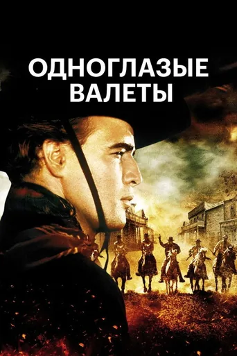

Одноглазые валеты 1961
Рио и Папаша - бандиты. В 1880 году они грабят банк в Мексике, но уходить от погони им приходится на одной лошади. Понимая, что на одной лошади им не оторваться, Рио посылает Папашу найти вторую лошадь, пока он будет отстреливаться от отряда погони. Папаша, однако, оставляет попытки найти вторую лошадь и уезжает прочь вместе с добычей. Рио, естественно, поймали, когда у него закончились патроны, и он попадает в тюрьму. Через пять лет зверского обращения пленнику удается бежать и снова встретиться с Папашей, все таким же вероломным и опасным человеком, но теперь ставшим шерифом в небольшом городке и живущим вместе с женой и падчерицей. Папаша, конечно, понимает, что Рио приехал не для того, чтобы поздравить его с Днем Отца, и принимает меры, чтобы защититься от обуреваемого жаждой мести Рио.
Открыть в каталогеДанные и постеры принадлежат их правообладателям. Этот продукт использует TMDB API, но не одобрен и не сертифицирован TMDB.